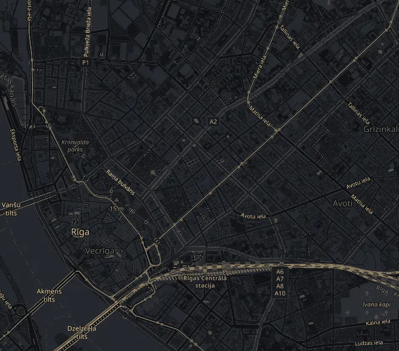

Komandas pieredze
Mūsu komandas objekti
Viesnīcas, dzīvojamās un sabiedriskās ēkas, ko gadu gaitā būvējusi un rekonstruējusi mūsu komanda. Katram objektam ir sava lapa ar fotogrāfijām, adresi, gadu un aptuvenajām izmaksām.
20152 objekti

20142 objekti

20133 objekti
20124 objekti
20102 objekti
20081 objekts
20071 objekts
Pabeigšanas datumi un aptuvenās izmaksas norādītas pēc komandas dokumentācijas.
Objekti kartē

Jēkaba iela 24Elizabetes iela 101Audēju iela 13Zigfrīda Annas Meierovica bulvāris 10Cēsu iela 23Minsterejas iela 8/10Kalpaka bulvāris 12Elijas iela 7© OpenStreetMapMūsu darbi
No mūsu objektiem
Fotogrāfijas no objektiem un būvlaukumiem: jaunbūve, vara jumti, fasādes, grīdas, stuks un apdare.
Vēlaties līdzīgu rezultātu?
Pastāstiet par savu objektu, un sagatavosim tāmi pēc apskates.